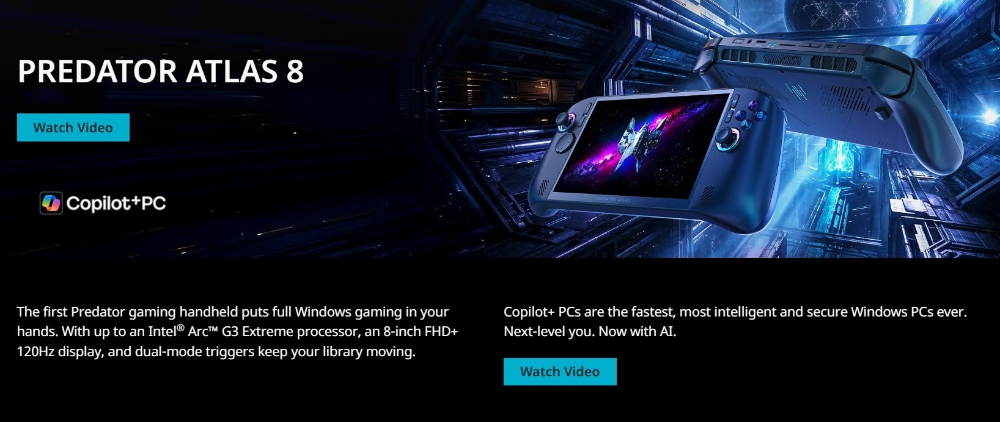

01 · Handheld gaming · Computex 2026
Predator Atlas 8
Building a new category story around Predator-grade performance made portable.
Predator had never entered the handheld category, so the launch needed a serious performance identity without shrinking the laptop message into a smaller form factor. The story led with Predator-grade performance, followed by control, display, thermal design, and secondary usability benefits. Led global English messaging, including the product summary, reviewer guide, KSP hierarchy, feature framing, and stakeholder-ready copy.
View Live Page: Predator Atlas 8